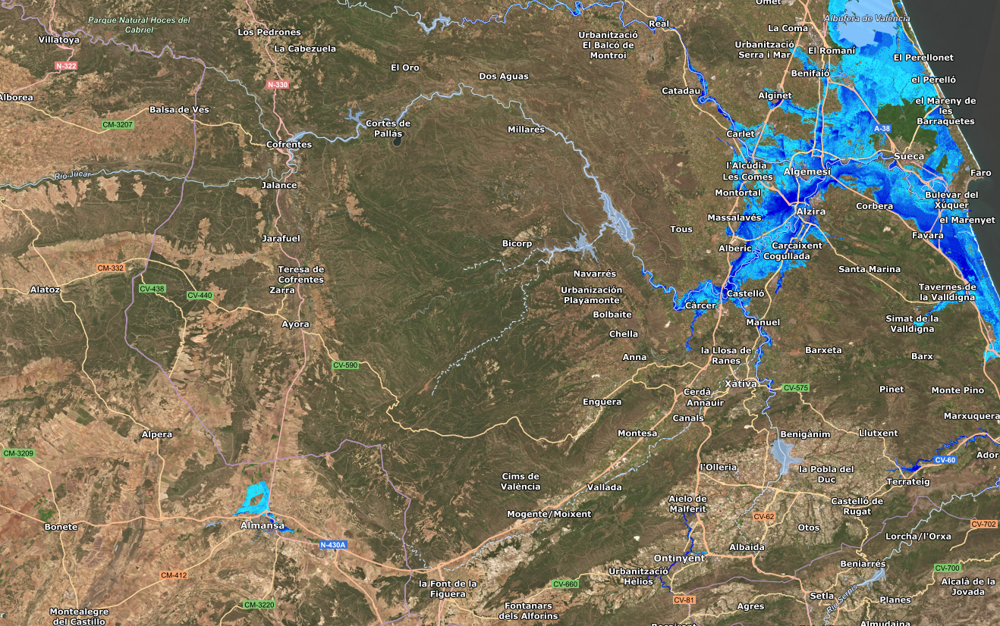
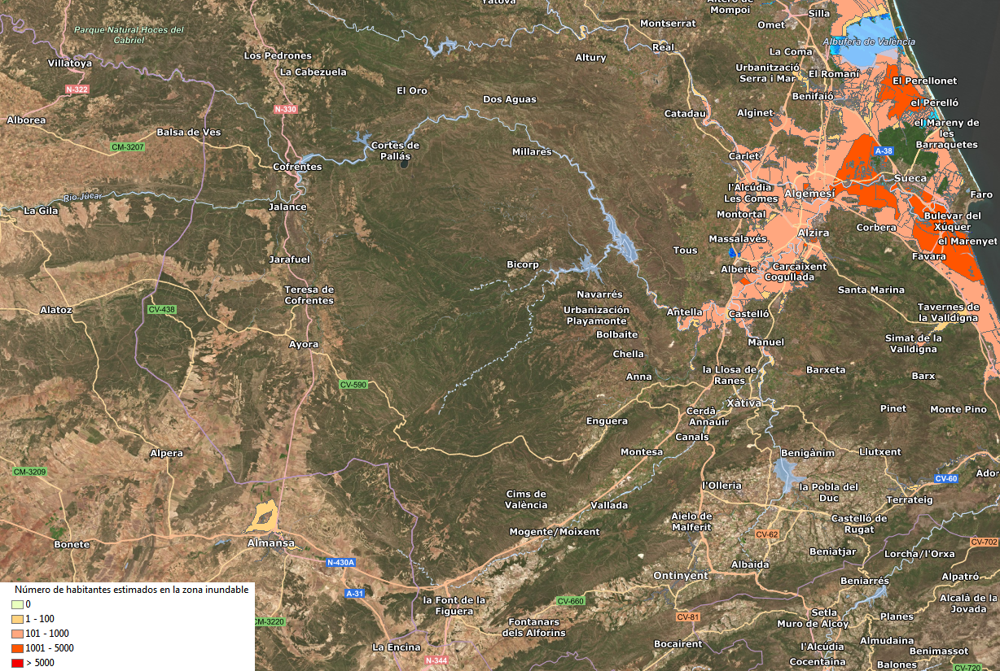
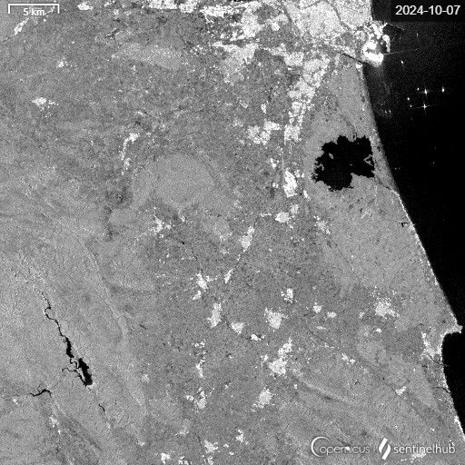

¿Qué es la cartografía en la gestión de emergencias?
El uso de mapas es fundamental para entender y responder a situaciones de emergencia como incendios, inundaciones, terremotos o huracanes. Los mapas ayudan a visualizar el terreno, los recursos y los riesgos, permitiendo tomar decisiones rápidas y bien informadas.
Los mapas sirven para:
Antes de una emergencia
- Identificar áreas de riesgo: Los mapas muestran zonas propensas a desastres, como áreas cercanas a volcanes, ríos o fallas sísmicas.
- Analizar la vulnerabilidad de la población: La cartografía permite ver qué poblaciones están en áreas peligrosas, cuántas personas viven allí etc.
- Priorizar recursos y preparación: Si se sabe que una ciudad está en una zona de alto riesgo, los gobiernos pueden planificar hospitales, albergues y recursos de emergencia en lugares estratégicos.
Durante una emergencia
- Monitorear el avance del desastre: Con imágenes de satélite, se pueden actualizar mapas constantemente para ver cómo cambia la situación (como el avance de un incendio o una inundación).
- Tomar decisiones informadas: Esto permite a los equipos de emergencia ajustar sus acciones rápidamente, como redirigir rutas de evacuación si el desastre se desplaza.
- Planificar rutas de evacuación: Los mapas ayudan a identificar las rutas más seguras para evacuar personas y trasladar recursos. Por ejemplo, en un incendio forestal, se usan mapas para evitar caminos en riesgo.
- Ubicar puntos de encuentro y albergues: En los mapas se marcan lugares seguros y albergues donde las personas pueden refugiarse. Esto facilita que los rescatistas orienten a la población.
- Evitar zonas de peligro: Gracias a la cartografía en tiempo real (basada en imágenes de satélite), se puede ver el avance de un desastre, como el recorrido de un huracán, y redirigir a las personas a zonas seguras.
Después de una emergencia
- Coordinar equipos de rescate: Los mapas muestran dónde están los equipos de rescate y cómo pueden llegar más rápido a las áreas afectadas.
- Monitorear el estado de las infraestructuras: En un terremoto, se pueden usar mapas para verificar carreteras, hospitales y otras infraestructuras para decidir dónde enviar reparaciones o ayuda.
- Desplegar ayuda humanitaria: La cartografía ayuda a organizar la entrega de alimentos, agua y medicinas, priorizando las zonas más afectadas o aisladas.


